一个关于奶牛的微积分问题
可以求导的函数越多，我们能够解决的问题就越多。微积分中最重要的函数可能是指数函数 y = ex。这个函数之所以十分特殊，是因为它的导数与原函数相同。
定理：如果 y = ex，那么 y' = ex。
延伸阅读
f (x) = ex 为什么满足 f '(x) = ex 呢？现在，我们来探讨其中的原因。我们注意到：
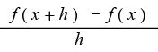
=
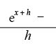
=
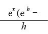
现在，请大家回想一下e的定义：
e =
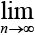
( 1+
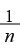
)
n
从定义可以看出，随着n不断增大，(1 + 1 / n)n 将会趋近e。现在，令 h = 1 / n。当n非常大时，h = 1 / n就会趋近0。也就是说，当h 趋近0时：
e ≈ (1 + h)1/h
等式两边同时求h次幂，根据指数法则(ab )c = abc，可以得到：
eh ≈ 1 + h
也就是说：
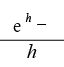
≈ 1
因此，当h趋近0时，趋近1， 趋近ex。证明完毕。 □
趋近ex。证明完毕。 □
是否还有其他函数与它们的导函数相同呢？有，但所有符合条件的都是 y = cex （x为实数）这种形式的函数。（注意，c = 0时函数也符合条件，我们得到的是常数函数 y = 0。）
我们已经知道，函数相加时，和的导数就是导数的和。函数乘积的导数呢？千万注意，乘积的导数并不是导数的乘积。不过，从下面的定理可以看出，乘积的导数也不难求。
定理（函数积求导法则）：如果 y = f (x) g (x)，那么：
y' = f (x) g' (x) + f ' (x) g (x)
例如，在求 y = x3ex 的导数时，我们令 f (x) = x3，g (x) = ex，就有：
y' = f (x) g' (x) + f ' (x) g (x)
= x3ex + 3x2ex
注意，当f (x) = x3，g (x) = x5时，根据函数积求导法则，x3x5 = x8 的导数为：
y' = x3(5x4) + 3x2(x5)
= 5x7 + 3x7 = 8x7
这与幂函数求导公式一致。
延伸阅读
证明（函数积求导法则）：令 u (x) = f (x) g (x)，就有：
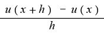
=
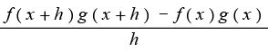
接下来，我们采用一个巧妙的方法：在分子上先减去再加上 f (x + h) g (x)。这样一来，在分子保持不变的情况下，我们把上式变成：
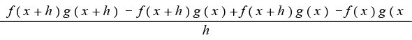
= f ( x + h ) [
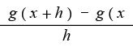
] + [
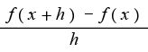
]
g (
x )
当h趋近0时，上式就会变成 f (x) g' (x) + f ' (x) g (x)。证明完毕。 □
函数积求导法则不仅可以用于计算，还可以帮助我们求出其他函数的导数。例如，我们在前文中证明当指数为正时，幂函数求导公式成立，现在我们可以证明当指数为分数和负数时，该公式也成立。
例如，幂函数求导公式表明：
我们现在用函数积求导法则来证明上述结果。假设
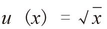
，那么：
对等式两边进行求导运算，根据函数积求导法则，我们可以得到：
u (x) u' (x) + u' (x) u (x) = 1
也就是说，2u (x) u' (x) = 1，因此
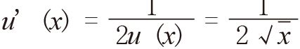
，这同上述结果一致。
延伸阅读
如果幂函数求导公式还可以用于指数为负数的情况，那么根据该公式，y = x–n 应该有导数 y' = –nx–n–1 =
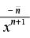
。为了证明这个结论，我们令
u (
x) =
x–n，其中
n H 1。根据定义，当
x ≠ 0时，有：
u (x) xn = x–nxn = x0 = 1
运用函数积求导法则，对等于两边进行求导运算：
u(x)(nxn–1) + u'(x)xn = 0
两边同时除以xn，并将等式左边的第一项移到等式右边，就会得到：
u' (x) = –n
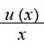
=
证明完毕。 □
因此，如果 y = 1 / x = x–1，那么 y' = –1 / x2。
如果 y = 1 / x2 = x–2，那么 y' = –2x–3 = –2 / x3。以此类推。
在本书第7章，我们希望找到一个正数x，使函数y = x + 1 / x的值最小。当时我们利用几何知识，巧妙地证明了x = 1满足条件。但是，有了微积分之后，我们就不再需要绞尽脑汁了。由 y' = 0可知1– 1/x2 = 0，所以满足这个方程式的唯一正数就是 x = 1。
三角函数求导也非常简单。注意，下面这条定理成立的条件是所有角必须用弧度来表示。
定理：如果 y = sin x，那么 y' = cos x；如果 y = cos x，那么y' = –sin x。换言之，正弦函数的导数是余弦函数，余弦函数的导数是正弦函数的相反数。
延伸阅读
证明：要证明上述定理，需要使用下面这个“引理”（Lemma）。（引理的作用就是辅助证明定理）。
引理：
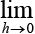
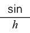
= 1且
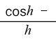
= 0
这个引理的意思是，对于大小（弧度）接近于0的任意角h，其正弦函数接近于h，余弦函数接近于1。例如，我们利用计算器可以算出sin0.012 3 = 0.012 299 6…；cos0.012 3 = 0.999 924 3…。暂且假设这条引理是正确的，我们就可以对正弦函数和余弦函数求导了。利用第9章介绍的sin (A + B)恒等式，得出：
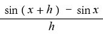
=
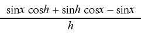
= sinx (
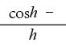
) + cos
x(
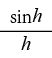
)
根据引理，当h趋近0时，上式就会变成 (sinx) (0) + (cosx) (1) = cos x。同理，我们可以得到：
=
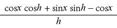
= cosx ( ) + sinx()
当h趋近0时，上式就会变成 (cosx) (0) – (sinx) (1) = –sinx。证明完毕。 □
延伸阅读
利用下图，可以证明=1。
该单位圆上有两个点，分别为 R (1, 0)和P (cosh, sinh)，其中h是一个非常小的正数角。同时，在直角三角形OQR中：
tanh =
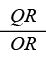
=
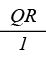
=
QR
由此可知，直角三角形OPS的面积是 cosh sinh，直角三角形OQR的面积是ORQR =tanh =
cosh sinh，直角三角形OQR的面积是ORQR =tanh =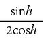
。
现在，来看扇形OPR。单位圆的面积是 π12 =π，扇形OPS是单位圆的h/(2π)倍。因此，扇形OPR的面积为π(h/2π) = h/2。
由于扇形OPR包含三角形OPS，同时被包含在三角形OQR中，因此这三个图形面积的关系满足：
cosh sinh <
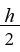
<
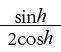
同时乘以
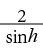
> 0，就会得到：
cosh <
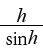
<
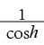
如果正数a、b、c满足 a < b < c，那么1/c < 1/b < 1/a。因此：
cosh <
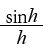
<
由于h趋近0，所以cosh 与1 / cosh 都趋近1。这与我们想要的结果一致。
也就是说， = 1。 □
延伸阅读
有了上述结果，再通过代数运算（包括cos2h + sin2h = 1），就可以证明 = 0。
证明过程如下：
=·
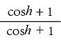
=
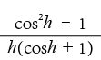
=
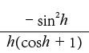
= – ·
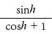
由于h趋近0，因此趋近1，且趋近
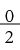
= 0。也就是说， = 0。□
知道正弦函数和余弦函数的导数之后，就可以求出正切函数的导数了。
定理：对于 y = tan x，y' = 1 / cos2x = sec2x。
证明：令 u (x) = tan x = (sinx) / (cosx)，就有：
tanx·cosx = sinx
根据函数积求导法则，对等式两边同时求导：
tanx ·(–sinx) + tan'x·cosx = cosx
等式两边同时除以cosx，即可求出tan'x：
tan'x = 1 + tanx· tanx = 1 + tan2x =
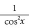
= sec2x
上面倒数第二步是通过恒等式cos2x + sin2x = 1两边同时除以cos2x后实现的。
利用同样方法可以证明函数商求导法则。
定理（函数商求导法则）：如果 u (x) = f (x) / g (x)，那么：
u' (x) =
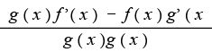
延伸阅读
函数商求导法则证明过程如下：
因为 u (x) g (x)= f (x)，等式两边同时进行求导运算，根据函数积求导法则，可以得到：
u (x) g'(x) + u'(x) g (x) = f '(x)
等式两边同时乘以 g (x)：
g (x) u (x) g'(x) + u'(x) g (x) g (x) = g (x) f '(x)
把g (x) u (x) 替换成 f (x)，求出 u' (x) 的值，就会发现它与我们想要的结果一致。 □
我们已经知道如何对多项式、指数函数、三角函数等求导，还学会了函数和、积与商的求导方法，“链式法则”（chain rule）（本书将给出这条法则，但不提供证明过程）则会告诉我们如何对复合函数求导。例如，如果 f (x) = sinx，g (x) = x3，那么：
f [g (x)] = sin [g (x)] = sin (x3)
请注意，该函数不同于函数g [f (x)] = g (sinx) = (sinx)3。
定理（链式法则）：如果 y = f [g (x)]，那么 y' = f '[g (x)]g '(x)。
例如，如果 f (x) = sinx，g (x) = x3，那么 f '(x) = cosx，g '(x) = 3x2。根据链式法则，如果 y = f [g (x)] = sin (x3)，那么：
y' = f '[g (x)]g '(x) = cos [g (x)] g '(x) = 3x2cos (x3)
一般来说，根据链式法则，如果 y = sin [g (x)]，那么 y' = g '(x) cos [g (x)]。同理，如果y = cos [g (x)]，那么 y' = –g '(x) sin [g (x)]。
另一方面，对于函数 y = g [f (x)] = (sinx)3，由链式法则可知：
y' = g '[ f (x)] f '(x) = 3[ f (x)2 ] f '(x) = 3sin2x cos x
推而广之，如果 y = [ g (x)]n，那么y' = n[g (x)]n–1g '(x)。根据链式法则，如何对 y = ( x3 )5求导呢？
y' = 5(x3)4 (3x2) = 5x12 (3x2) = 15x14
这与幂函数求导公式得出的结果一致。
请大家计算
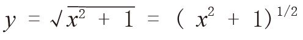
的导数。根据链式法则：
指数函数的求导运算同样非常简单。由于ex的导数就是它本身，因此，当 y = eg(x)时，根据链式法则：
y' = g '(x) eg(x)
例如，y = ex3 的导数为 y' = ( 3x2 ) ex3。
请大家注意，函数 y = ekx 的导函数为 y' = kekx = ky。指数函数之所以非常重要，这个属性是原因之一。只要函数的增长速度与函数值的大小成比例关系，就会产生指数函数，指数函数在金融、生物领域中的出现频率特别高。
对于任意x > 0，自然对数函数lnx 都具有以下特性：
elnx = x
下面，我们利用链式法则来求它的导数。令 u (x) = lnx，则eu(x) = x。对方程式两边求导，就会得到u'(x) eu(x) = 1。由于eu(x) = x，因此u'(x) = 1/x。换句话说，如果 y = lnx，那么 y' = 1/x。根据链式法则，如果 y = ln [g (x)]，则 y' =
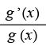
。
我们把根据链式法则得出的这些结论汇总如下：
接下来，我们利用链式法则来解决“奶牛微积分”问题！一条小河由东向西流淌（x轴），奶牛克莱拉站在小河北边1英里的地方，牛棚在克莱拉东边3英里、北边1英里的地方。克莱拉想去小河边喝完水后回到牛棚。请问，要使克莱拉行走的路程最短，我们如何帮它找到饮水点的位置？
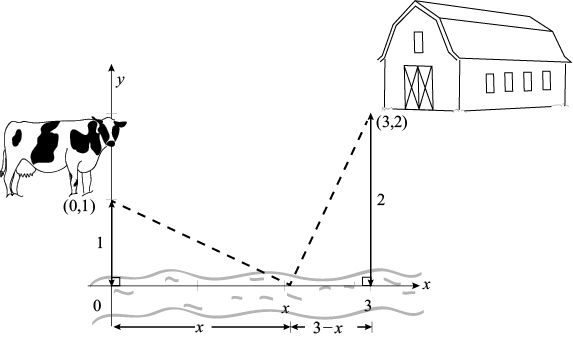
奶牛微积分：要使奶牛行走的路程最短，如何确定饮水点的位置？
我们还可以用第7章介绍的“映像法”来验证这个答案。我们假设克莱拉喝完水之后，不是回到点(3, 2)处的牛棚，而是如下图所示走到牛棚的映像点 B' (3, –2)处。
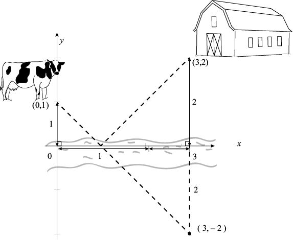
利用映像法，也可以解决这个问题
饮水点到点B'的距离与到点B的距离正好相等。从小河北边的任意位置走到小河南边都必须越过x轴，其中距离最短的路线是点 (0, 1)和点 (3, –2)的连线。这条直线的斜率是 –3/3 = –1，与x轴相交于 x = 1的位置。这种方法既不需要使用微积分，也不需要开平方！